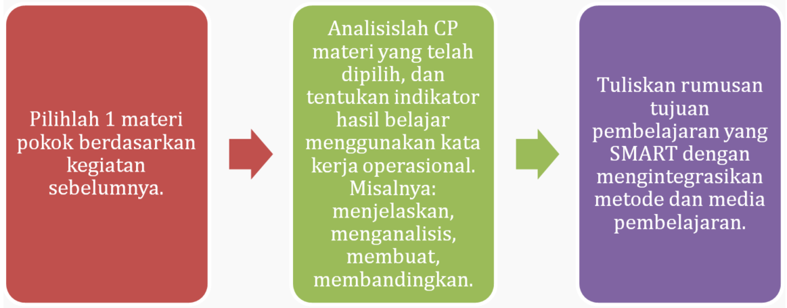

1. Pengantar
Kegiatan Belajar 1 mengarahkan guru Biologi untuk menyusun fondasi utama dari perencanaan pembelajaran berbasis KA. Fokus utama kegiatan ini mencakup identifikasi materi Biologi yang sering menimbulkan kesulitan bagi murid, perumusan tujuan pembelajaran yang SMART, dan penentuan aplikasi KA yang relevan untuk mendukung ketercapaian tujuan tersebut.
Pemahaman terhadap materi-materi tersebut membantu guru untuk merancang pembelajaran yang lebih terarah, terukur, dan sesuai dengan karakteristik murid di kelas. Seluruh proses ini menjadi dasar bagi perancangan aktivitas pembelajaran dan asesmen pada kegiatan belajar berikutnya.
2. Prinsip Penyusunan Tujuan Pembelajaran Biologi yang SMART
Bapak/Ibu, tujuan pembelajaran berfungsi sebagai peta kompetensi yang menjadi acuan bagi guru dalam merancang pembelajaran. Tujuan yang ideal memuat dua komponen utama. Komponen pertama adalah kompetensi, yaitu kemampuan sikap, pengetahuan, atau keterampilan yang dapat ditunjukkan oleh murid. Komponen kedua adalah konten, yaitu konsep inti yang harus dikuasai murid pada akhir satu unit pembelajaran.
Perumusan tujuan pembelajaran dapat menggunakan format SMART, yang merupakan singkatan dari Specific, Measurable, Achievable, Relevant, dan Time-bound. Format SMART membantu guru memastikan bahwa tujuan pembelajaran jelas, terukur, realistis, relevan, dan terikat waktu, sehingga mudah dievaluasi ketercapaiannya. Masing-masing komponen SMART dapat Anda pelajari dalam jabaran berikut ini.
Apa saja unsur-unsur dalam SMART?
Contoh format singkat
Bapak/Ibu, struktur tujuan pembelajaran dapat diperjelas melalui elemen Audience (A) atau sasaran, Behavior (B) atau perilaku yang dapat diamati, Condition (C) atau kondisi/sumber belajar, dan Degree (D) atau tingkat ketuntasan. Mari kita lihat perumusan tujuan pembelajaran menggunakan ABCD dari contoh berikut:
| “Pada akhir minggu ke-2 (T), siswa kelas X (A) menganalisis faktor yang mempengaruhi difusi paru-paru (B) dengan menggunakan data hasil praktikum sederhana (C) hingga mampu mengidentifikasi minimal tiga faktor dengan penjelasan benar (D).” |
3. Teknik Mengidentifikasi Materi Biologi yang Sulit Dipahami Murid dan Berpotensi Didukung oleh Media Pembelajaran Inovatif
Bapak/Ibu dapat mengidentifikasi materi Biologi berdasarkan CP terbaru, yang dirasa sulit dipahami oleh murid. Data tersebut dapat Bapak/Ibu peroleh melalui analisis tingkat kesulitan konsep, miskonsepsi yang ditemukan dalam pembelajaran, data hasil belajar, hasil observasi dalam kelas, dan keterhubungan dengan kehidupan nyata, berdasarkan pengalaman Bapak/Ibu dalam pembelajaran selama ini.
Hasil identifikasi dapat dituangkan dalam Tabel Analisis Materi Biologi dan Dukungan KA seperti terlihat pada Gambar 2. Format tabel tersedia di tautan https://bit.ly/LKPDanalisisBiologi
Bapak/Ibu dapat melengkapi Tabel Analisis Materi Biologi dan Dukungan KA, dengan alasan mengapa materi tersebut sulit dipahami oleh murid pada tabel kolom 4, tingkat kesulitan pada tabel kolom 5 dan Alternatif KA serta bentuk dukungan KA pada tabel kolom 6. Bentuk dukungan KA dapat berupa visualisasi objek, personalisasi pembelajaran, analisis data oleh murid, atau dukungan lain, sebagaimana materi pada Modul 2 yang telah Bapak/Ibu pelajari. Dengan demikian, Bapak dan Ibu telah berhasil memetakan materi Biologi dan dukungan KA sebagai solusi yang Bapak/Ibu harapkan terhadap kesulitan murid selama ini dalam memahami materi/konsep Biologi.
Selanjutnya, Bapak/Ibu akan menganalisis CP dari materi yang telah dipilih, dengan langkah-langkah sebagai berikut:

4. Contoh RPP atau Modul Ajar Biologi yang Mencantumkan Tujuan Pembelajaran dan Bagian Media Berbasis KA
Penyusunan tujuan pembelajaran yang SMART diikuti dengan penentuan media berbasis KA dalam RPP atau Modul Ajar. Contoh tujuan pembelajaran berikut menunjukkan integrasi media KA secara jelas:
| “Melalui simulasi KA, murid mampu menjelaskan proses pertukaran gas pada alveolus dengan benar dan menjawab minimal 80% soal evaluasi dalam 1 pertemuan (2 × 45 menit).” |
Ulasan tujuan pembelajaran tersebut:
- Tujuan ini Specific karena menyebutkan kompetensi (menjelaskan proses pertukaran gas) dan metode (simulasi KA).
- Measurable karena capaian pembelajaran murid dapat diukur secara kuantitatif (menjawab minimal 80% soal evaluasi dengan benar).
- Achievable artinya tujuan ini masuk akal dan bisa dicapai dalam waktu dan konteks pembelajaran normal, Targetnya realistis ( 80% ketepatan dalam satu pertemuan (2×45 menit) dengan dukungan simulasi KA sebagai media pembelajaran.
- Relevant yaitu tujuan mendukung pencapaian kompetensi inti dan dasar. Materi dan keterampilan yang dipelajari relevan dengan kompetensi dasar IPA/Biologi tentang sistem pernapasan, khususnya proses pertukaran gas di alveolus.
- Time-bound (terikat waktu), Tujuan memiliki kerangka waktu, dibatasi waktu yang jelas yaitu 1 pertemuan 2 x 45 menit untuk pencapaian.
Bapak/Ibu dapat melihat penerapan Tujuan Pembelajaran dalam contoh modul ajar yang dapat diakses melalui tautan https://bit.ly/contohmodulajarBiologi